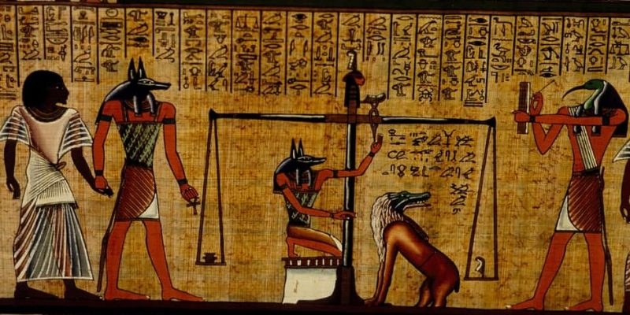
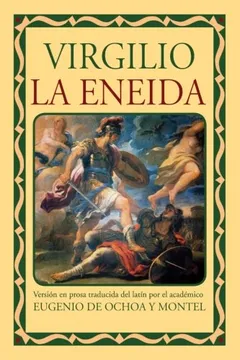
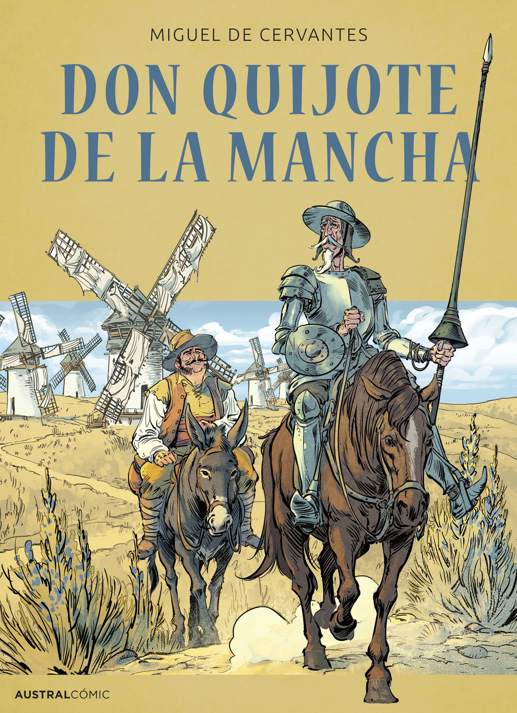
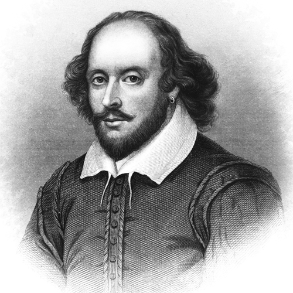

Por otro lado, los primeros textos escritos no fueron precisamente literarios. Es complicado precisar cuándo y dónde surgieron las primeras formas de literatura de la historia. Sin embargo, se sabe que la primera tradición formal fue la épica, que cumplía con roles fundacionales y contenía no sólo gestas militares, sino también las visiones cosmológicas y religiosas de sus pueblos. Por ejemplo, la "Epopeya de Gilgamesh", compuesto en tabletas de arcilla de la antigua Sumeria.
Sin embargo, la tradición literaria occidental tiene su inicio formal en la Grecia Clásica, con la trascripción de los textos épicos atribuidos a Homero (c. siglo VIII a. C.): la Ilíada y la Odisea, enmarcados en los eventos de la Guerra de Troya. Estos textos fueron probablemente recitados oralmente, por lo que se componían en verso. Por otro lado, inspiraron a creadores posteriores de la misma tradición cultural a componer las grandes tragedias griegas: los grandes dramaturgos Esquilo (c. 525-c.456 a. C.), Sófocles (496-406 a. C.) y Eurípides (c. 480-406 a. C.).
La literatura griega fue luego heredada por los romanos, quienes perpetuaron su tradición estética en más de un sentido. Destaca la épica fundacional del poeta Virgilio, en su obra "Eneida", en la que vinculaba la fundación del Imperio Romano en los sobrevivientes troyanos de la guerra.
Debido al rechazo de la tradición grecolatina, surgió la literatura cristiana medieval para imponer su religiosidad y sus valores. Se escribían obras sobre la vida de los santos denominados como hagiografías y también surgieron las poesías místicas y textos sacros. Un claro ejemplo constituyen las "Confesiones" de San Agustín donde relata su descubrimiento hacia Dios y su conversión a la Iglesia.
Durante el siglo XV, el arte poético hizo eco de las transformaciones propias de la llegada del Humanismo y proliferó en muy distintos aspectos. En este período destaca la literatura del Barroco (especialmente en España), cuyo máximo representante es Miguel de Cervantes (1547-1616) con su Don Quijote de la Mancha, obra que dio nacimiento al género de la novela moderna. También fue importante la literatura isabelina con la dramaturgia de William Shakespeare (1564-1616), central en la tradición de Occidente hasta hoy.
 Desde entonces, la literatura prosiguió una marcha de constante innovación y renovación, de la mano de las corrientes filosóficas que imperaron en adelante. Así, hubo una literatura de la Ilustración (en la que predominó el Realismo), una literatura del Romanticismo, y finalmente un posromanticismo que, a mediados del siglo XIX y comienzos del XX, inauguró la literatura moderna (que bien podría llamarse contemporánea).